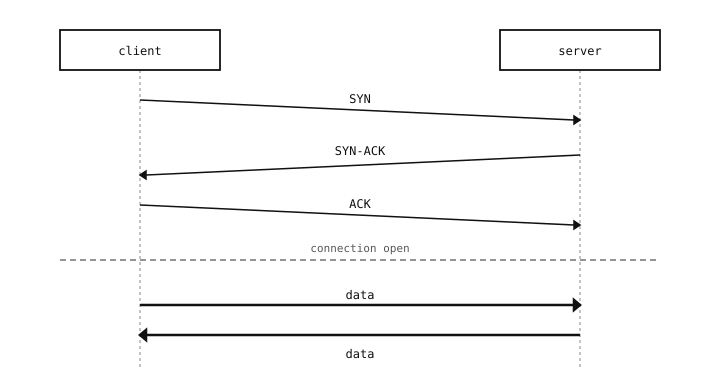

9.10. TCP – un flux d’octets fiable¶
TCP, le Transmission Control Protocol, est l’autre service de couche transport reposant sur IP. Là où UDP se décrit le mieux par « envoyer un paquet et espérer », TCP consiste à « ouvrir une connexion entre deux extrémités et la traiter comme un tube d’octets bidirectionnel que l’autre côté reçoit assurément, dans l’ordre et exactement une fois ». La majeure partie du trafic Internet l’utilise, et la plupart des opérations réseau de la caméra l’utilisent aussi.
9.10.1. Ce que TCP ajoute à IP¶
TCP fait bien plus qu’UDP. Il ajoute :
Une connexion. Avant que la moindre donnée ne circule, les deux extrémités échangent une courte poignée de main pour convenir qu’elles dialoguent. La connexion possède un état – « ouverte », « semi-fermée », « fermée » – que les deux côtés suivent.
Une livraison fiable. Chaque octet émis par l’expéditeur est acquitté par le destinataire. Tout ce qui n’est pas acquitté dans un délai imparti est renvoyé. L’application ne voit jamais d’octet perdu ; elle constate un délai pendant que le protocole renvoie les données.
Une livraison dans l’ordre. Les octets arrivent dans le même ordre que celui de leur envoi. Même si les paquets arrivent au destinataire dans le désordre, TCP les réordonne avant que l’application ne les lise.
Le contrôle de flux. Si le destinataire est lent, l’expéditeur est invité à ralentir ; la connexion s’adapte au débit de l’extrémité la plus faible.
Le contrôle de congestion. Si le réseau intermédiaire commence à perdre des paquets, l’expéditeur réduit son rythme jusqu’à ce que la situation se rétablisse. Cela empêche une connexion donnée de saturer complètement un lien déjà chargé.
Tout cela est automatique. L’API Python que l’application utilise se résume à send(bytes) et recv(n) ; TCP gère tout le reste en dessous.
9.10.2. La poignée de main¶
Une connexion TCP s’ouvre par un échange en trois temps avant qu’aucune donnée ne soit autorisée à passer :

La poignée de main en trois temps. Une fois que les deux côtés se sont acquittés, la connexion est ouverte et les données peuvent circuler.¶
Le client envoie un paquet SYN (synchronise) demandant l’ouverture. Le serveur répond par un SYN-ACK (synchronise + acknowledge), acceptant. Le client envoie un ACK final pour confirmer. Après cet aller-retour, les deux côtés conviennent que la connexion est ouverte et ont synchronisé leurs compteurs pour suivre quels octets ont été envoyés et reçus.
La poignée de main coûte un temps d’aller-retour de latence avant que le premier octet utile ne passe. Pour les réseaux locaux, cela représente une milliseconde ; pour les connexions intercontinentales, environ 100 ms. C’est le coût principal de TCP et la raison pour laquelle les messages courts et ponctuels gagnent parfois à passer par UDP à la place.
9.10.2.1. La poignée de main de fermeture¶
Les connexions TCP se ferment également par un échange (un FIN de chaque côté). Chaque extrémité peut fermer sa moitié de la connexion de façon indépendante ; un état semi-fermé où un côté a fini d’émettre alors que l’autre dialogue encore est licite, bien que peu courant. L’application appelle normalement simplement close() et laisse le protocole gérer la séquence d’arrêt.
9.10.3. Ce que TCP ne garantit pas¶
Quelques points que l’on suppose parfois assurés par TCP mais qui ne le sont pas :
Les délimitations de messages. L’application envoie un flux d’octets, et non un flux de messages. Deux appels
send(b"hello")peuvent arriver sous la forme d’un seulrecv()deb"hellohello", ou de deuxrecv()s de tailles variables. Si l’application veut un découpage en messages, elle doit ajouter elle-même ce découpage (un saut de ligne, un préfixe de longueur, ce que l’on veut). Envoyer des documents JSON sur TCP, par exemple, nécessite que chaque document soit séparé par un saut de ligne ou un autre marqueur.Le chiffrement. TCP transporte les octets que l’application lui a confiés, en clair, jusqu’au bout. Si le contenu doit rester confidentiel, l’application doit envelopper la connexion dans TLS (voir Sockets chiffrés et TLS).
L’authentification. TCP s’assure que les octets sont arrivés intacts. Il ne dit rien sur qui les a envoyés. L’authentification relève également d’une couche supérieure.
La vivacité sur une connexion silencieuse. Si aucun des deux côtés n’envoie de données pendant une longue période, la connexion est techniquement toujours ouverte mais ne peut pas détecter que l’autre extrémité a planté ou disparu. Des sondes keepalive peuvent être activées sur le socket pour pallier cela lorsque c’est important.
9.10.4. Quand utiliser TCP¶
TCP est la bonne réponse pour presque toute conversation qui correspond au schéma « un client ouvre une connexion vers un serveur, ils échangent des octets, la connexion se ferme une fois terminée ». Les requêtes HTTP et HTTPS, les sessions SSH, les requêtes de base de données, les transferts de fichiers, les téléversements d’images – tout passe par TCP.
Tournez-vous vers UDP uniquement lorsque la conversation ne correspond pas à ce schéma : des messages indépendants et autonomes où la perte est acceptable, du trafic multicast, de la synchronisation horaire, des résolutions de noms, ou des cas extrêmement sensibles à la latence où le coût de la poignée de main est rédhibitoire.
Avec les ports, UDP et TCP désormais tous abordés, le récit de la couche transport est complet. L’API Python qui expose les deux protocoles se trouve à la page suivante : Objets socket.